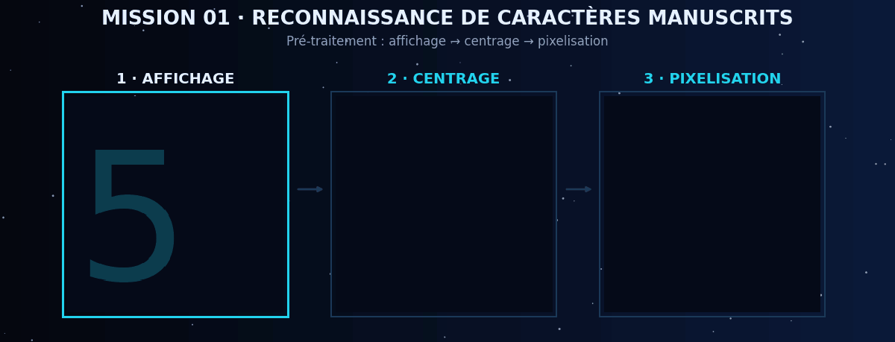

MISSION 01 · MATHÉMATIQUES & INFORMATIQUE
Reconnaissance de caractères manuscrits
Dans le cadre de mon TIPE en MPSI, j'ai travaillé sur un programme d'intelligence artificielle en Python capable de reconnaître des caractères écrits à la main.
Travaux réalisés
Affichage des caractères, centrage, pixelisation des images et évaluation des résultats obtenus.
Notions étudiées
Résultats : étude des performances du programme et analyse des erreurs de reconnaissance.
Voir le dépôt du projet ↗Remplace le lien ci-dessus par l'adresse réelle de ton dépôt de reconnaissance de caractères.